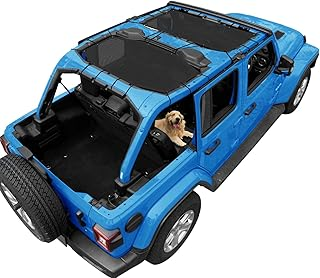
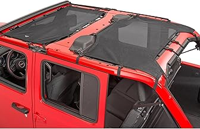
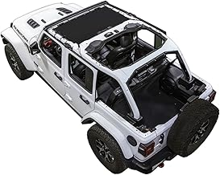
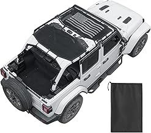
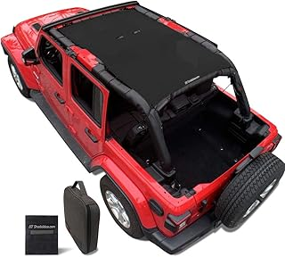

May 2026
We've spent serious time comparing jlshades. Some impressed us, some didn't, and a few genuinely surprised us.
Panic buying on sale days — Prime Day and Black Friday jlshades deals aren't always real discounts. Check year-round pricing.
Not measuring — "It looked bigger online" is the #1 return reason for jlshades. Measure twice.
Skipping negative reviews — A 4.5-star product with durability complaints tells you more than a 5-star product with 8 reviews.





⭐ 4.7 · $99.99
⭐ 4.1 · $69.99
⭐ 4.7 · $99.99
⭐ 4.3 · $68.99
⭐ 4.4 · $54.99
2026 has brought quality jlshades options at every price point. See our complete guide for current recommendations.